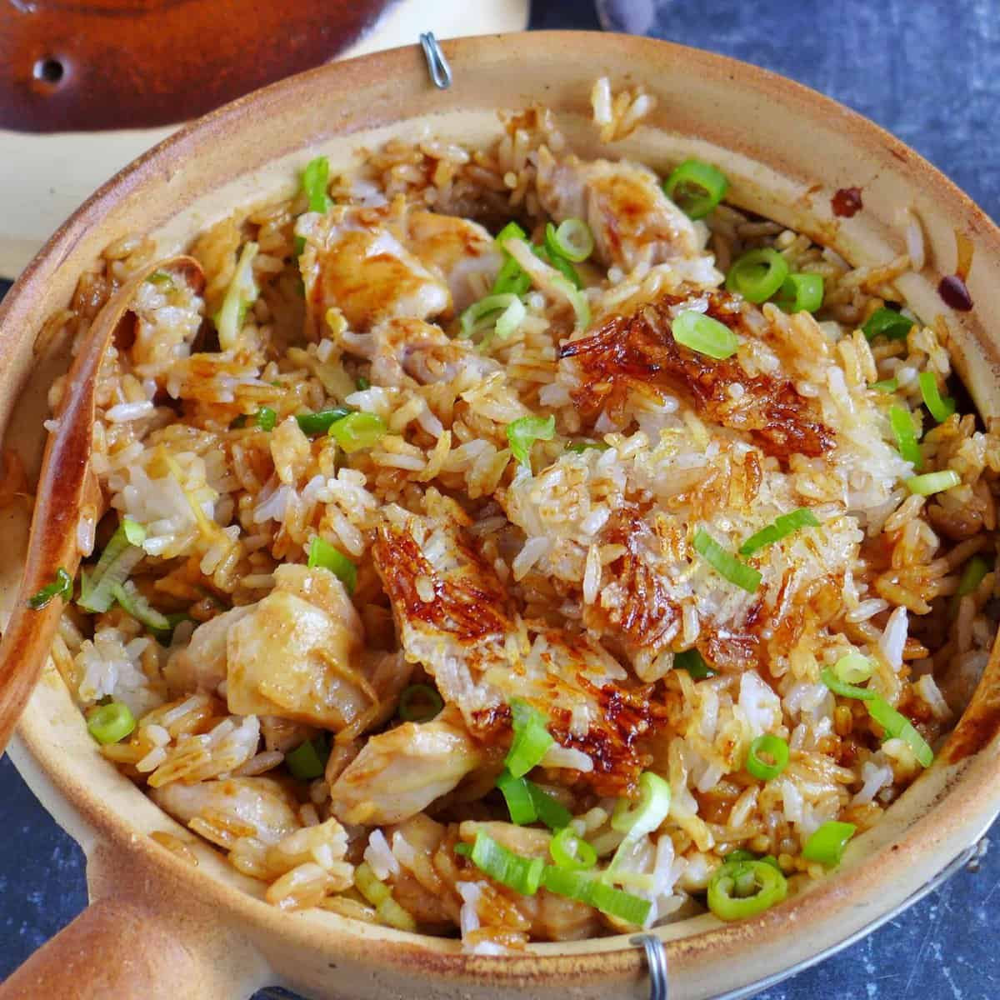

Fried Rice

Description
At first look, Chinese clay pot rice is a pretty simple dish: a layer of juicy meat or other toppings over rice, cooked and served in a pretty earthenware pot. That clay pot does more than sit pretty, though. Because of the clay material, it retains heat evenly, so everything inside steams together, helping their juices and flavors all combine harmoniously.
As a bonus (for some, this is arguably not a bonus, but the main reason to eat this dish in the first place), rice cooked in a clay pot develops a scorched crust, called 飯焦 faan6 ziu1 in Cantonese. Similar to the scorched rice in Korean stone pot bibimbap or Spanish paella, it's just shy of burnt and beautifully crunchy.
Ingredients
- Chicken/Beef/Pork
- Mushroom
- Chinese sausage
- Jasmine rice
- Tamari
- Vegetables of choice